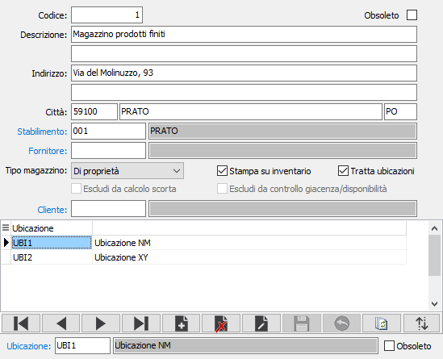

Magazzini
Le tabella consente di codificare e descrivere i magazzini dell’utente. Per “magazzino” si intende sia un magazzino fisico, sia un magazzino “logico” (es: magazzino ricambi, magazzino materie prime, magazzino prodotti finiti, ecc.), sia un reparto, sia eventuali magazzini presso terzi in conto lavorazione, riparazione, visione, ecc. L’articolazione della tabella Magazzini dipende quindi dall’analisi delle esigenze di ciascuna azienda in relazione alle problematiche di gestione del magazzino.
Gli utenti che dispongono di un magazzino unico devono comunque assegnargli un codice. Il codice del/dei magazzini è richiesto durante la registrazione delle operazioni di prima nota di magazzino e, nel caso in cui si debbano gestire più magazzini, durante l’emissione dei documenti di vendita o di acquisto.
Se per il magazzino non sono già state definite delle scorte né a livello di prodotto, né a livello di variante (se gestita), sarà attivo il campo "Escludi da calcolo scorta" che se spuntato non consentirà la gestione delle scorte sul magazzino stesso escludendolo di fatto da ogni calcolo inerente le scorte salvo richieste esplicite delle procedure.
E' possibile escludere il magazzino stesso dal controllo giacenza/disponibilità spuntando la casella "Escludi da controllo giacenza/Disponibilità"; il parametro è attivo solo nel caso in cui il controllo giacenze/disponibilità definito nella configurazione “Magazzino” sia impostato su singolo magazzino.
Se è attiva in configurazione la gestione delle ubicazioni sarà presente la casella "Tratta ubicazioni" indica se il magazzino gestisce le ubicazioni (casella spuntata), solo per i prodotti gestiti ad ubicazioni; in questo caso sarà possibile inserire anche le eventuali ubicazioni valide per il magazzino in oggetto. nel navigatore relativo alle ubicazioni è disponibile anche un pulsante di ordinamento per indicare la priorità delle ubicazioni all'interno del magazzino stesso.
La casella "Tratta ubicazioni" può essere spuntata solo se il magazzino non è movimentato, altrimenti è necessario utilizzare la procedura presente nei servizi del magazzino gestione dettaglio giacenze magazzini; la spunta può essere tolta in qualunque momento, ma sarà necessario effettuare il ricalcolo dei progressivi dei prodotti/dettagli.

CODICE: codice numerico di 8 caratteri per identificare il Magazzino in esame. Sul campo sono attive le funzioni di ricerca (F9) sulla tabella stessa.
DESCRIZIONE: campo alfanumerico di 50 caratteri per descrivere il Magazzino.
DESCRIZIONE 2: ulteriore campo alfanumerico di 50 caratteri per descrivere il Magazzino.
INDIRIZZO: campo alfanumerico di 50 caratteri per descrivere l’indirizzo del Magazzino.
INDIRIZZO 2: ulteriore campo alfanumerico di 50 caratteri per descrivere l’indirizzo del Magazzino.
CAP: campo alfanumerico per descrivere il cap del Magazzino.
CITTA’: campo alfanumerico di 50 caratteri per descrivere la città del Magazzino.
STABILIMENTO: codice alfanumerico di 3 caratteri, presente nella tabella Stabilimenti, per identificare l’eventuale Stabilimento di cui fa parte il Magazzino in esame. Sul campo sono attive le funzioni di ricerca (F9) sulla tabella .
FORNITORE: codice alfanumerico di 8 caratteri, presente nella tabella Fornitori, per identificare l’eventuale fornitore che detiene merce dell’utente a vario titolo e al quale è assegnato il Magazzino in esame. Sul campo sono attive le funzioni di ricerca (F9) sulla tabella Fornitori. Il campo è alternativo al campo Cliente.
TIPO MAGAZZINO: combo box per qualificare il magazzino attivo ai fini delle valorizzazioni LIFO. Valori ammessi:
MAGAZZINO DI PROPRIETÀ: (vari magazzini aziendali, merci dell’azienda presso terzi in c.to visione, comodato, ecc) concorre alla valorizzazione LIFO e nella stampa degli inventari.
MAGAZZINO DI TERZI: (merci di fornitori presso l’azienda in visione o comodato; merci di clienti presso l’azienda in c.to riparazione; cantieri e opere in corso, ecc) non concorre alla valorizzazione LIFO e alla stampa degli inventari.
STAMPA SU INVENTARIO: Se spuntato indica che il magazzino deve essere stampato sull’inventario di magazzino.
CLIENTE: codice alfanumerico di 8 caratteri, presente nella tabella Clienti, per identificare l’eventuale cliente che detiene merce dell’utente a vario titolo e al quale è assegnato il Magazzino in esame. Sul campo sono attive le funzioni di ricerca (F9) sulla tabella Clienti. Il campo è alternativo al campo fornitore.
OBSOLETO: flag attivabile dall’utente per inibire ulteriori utilizzi dell’elemento di tabella in esame.